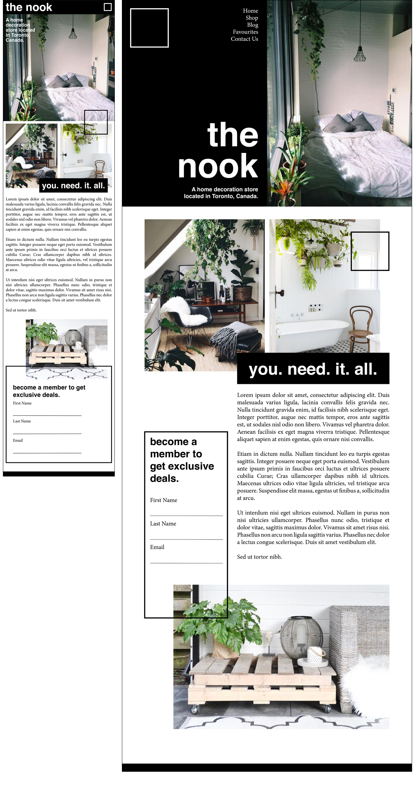

To make this mobile layout unique, I added a mix of modern design elements and accessibility fuctions to improve user experience. First, the nav will be condensed into a square icon. Having the nav condensed helps users easily get to the pages of the site, as well as gives the site a clean and modern look. As well, the black bar including nav will be "sticky," meaning that it will scroll with users and will alwyas remain at the top of the page. This allows for the nav to always be accessible, improving fuctionality and user engagement. The site's aesthetic mobile design also feautres a unique layout and several design elements (such as lines and boxes) that visually set it apart from other webpages. The use of colour scheme (green, white, black) is simple and will not overwhelm users while using smaller screen sizes. Finally, the mobile design will have adjusted font sizes to better fit smaller screens. The headings and body copy will become smaller depending on the size of the screen. This will make it quicker and easier for users to scroll and read information. 